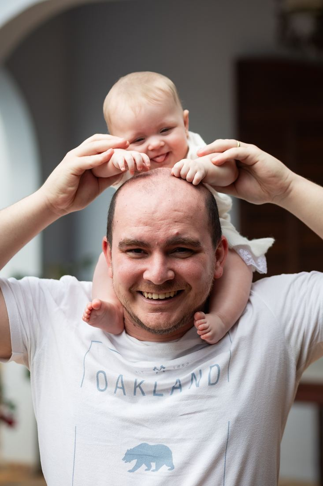

Por que joaninha?
pai João + filha igualzinha = uma pequena João = Joaninha
Quem vê a Alice logo diz que ela é a cara do pai. De tanto ouvir isso, ela virou nossa pequena João, e daí para Joaninha foi um pulo. Por isso a festa tem joaninhas por todo lado.